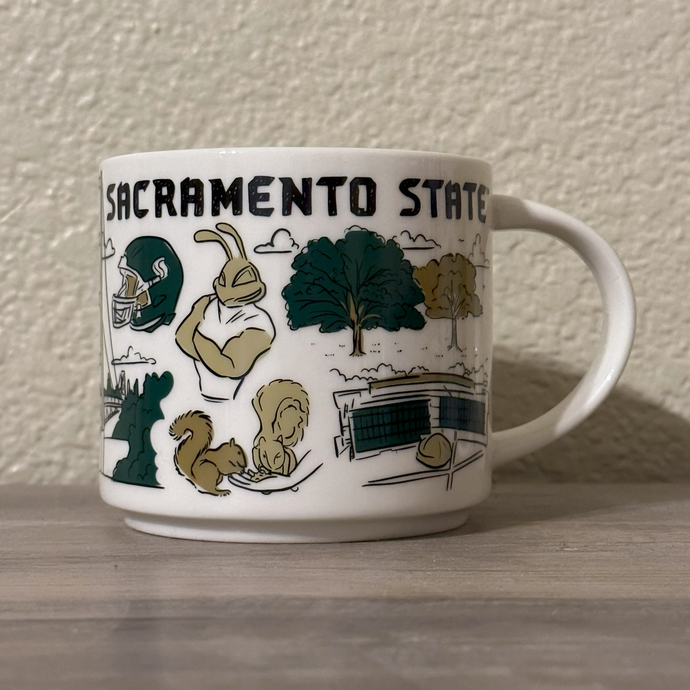

Sacramento State - 2022 Been There Series


- Brand: Starbucks
- Series: Been There Series
- Collection: Campus Collection
- Material: Ceramic
- Dimensions: 5.8 in. W x 3.9 in. H
- Capacity: 14 fl. oz.
- Year Made: 2022
- Description: A white mug with many icons representing CSU Sacramento State. There are other elements included on this mug: the notable hand sign alongside Sac States’ slogan, “Stingers Up!”, rumbles the spirit of Sacramento State supporters; the gate with a similar outlook as the Golden Gate Bridge connects the campus with the neighborhood; the Phlagleblast Game Card represents the scavenger hunt around the University Union to assist with familiarization; the WELL engages the campus community.